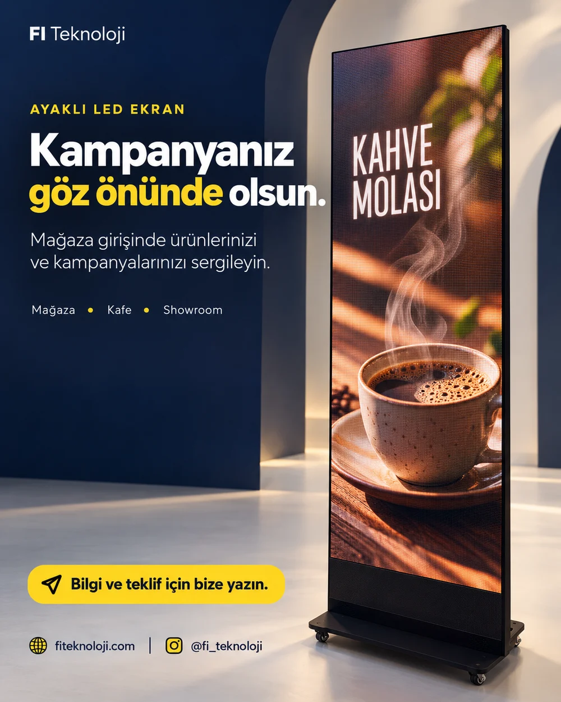
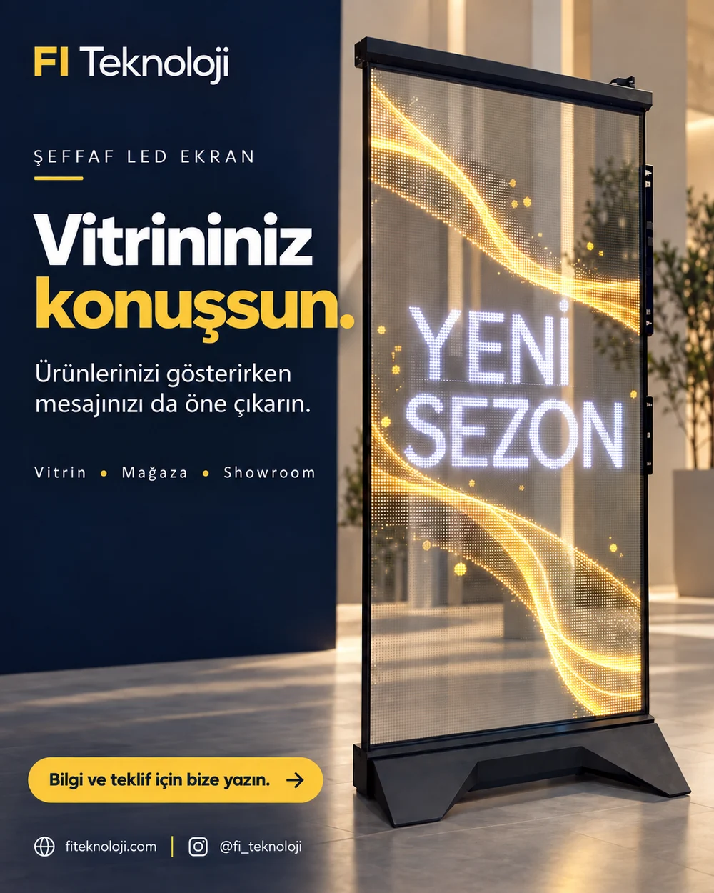
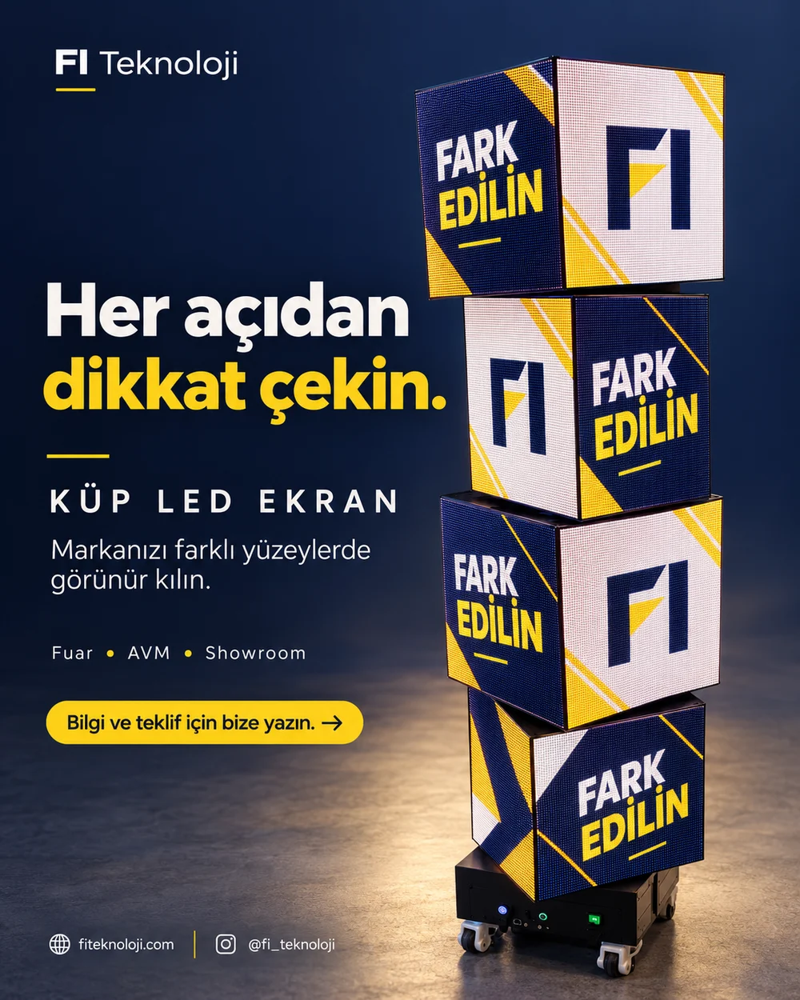
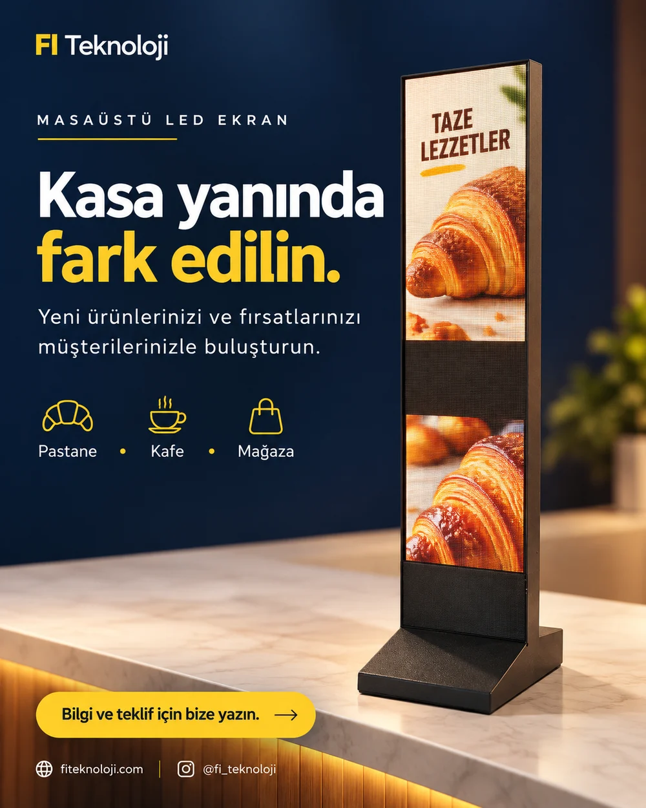
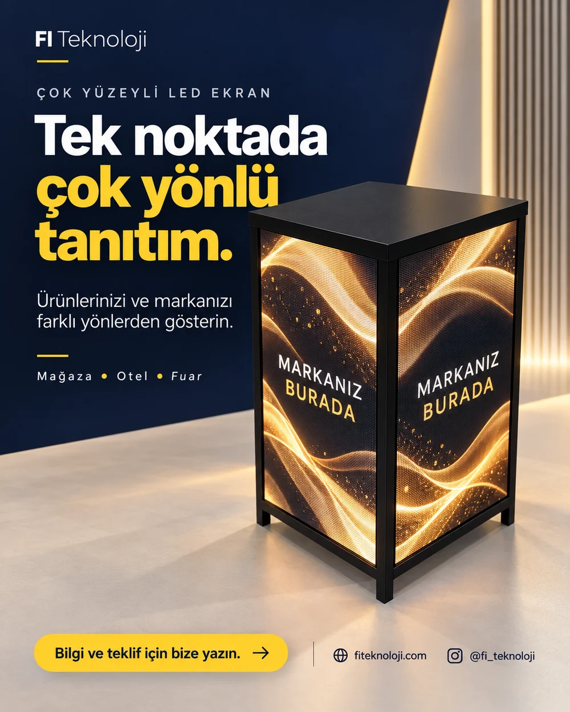
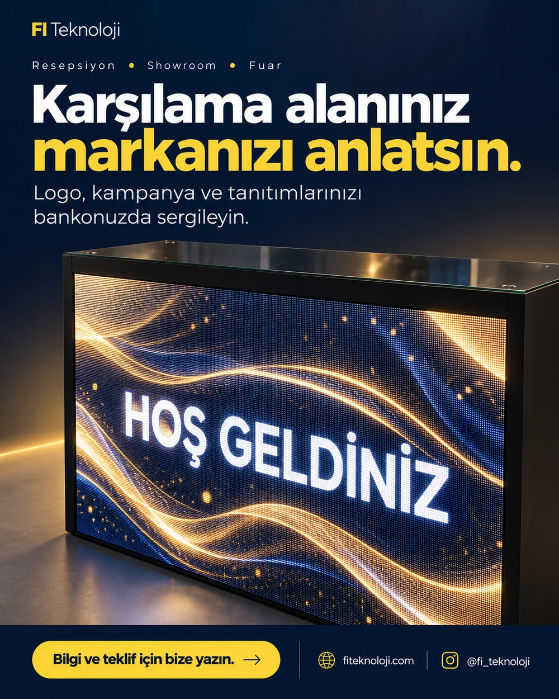

P2.5
2,5 mm piksel aralığı
P2.5, LED ekran üzerindeki piksellerin merkezleri arasındaki mesafeyi ifade eder. Ekranın toplam ölçüsü ve izleme uzaklığı, uygun kurulumun belirlenmesinde birlikte değerlendirilir.
P2.5 LED ekran çözümleriyle ürünlerinizi, kampanyalarınızı ve markanızı dijital yüzeylerde anlatın. FI Teknoloji ile ekran biçimini, yerleşimini ve kullanım ortamını birlikte planlayın.

P2.5
P2.5, LED ekran üzerindeki piksellerin merkezleri arasındaki mesafeyi ifade eder. Ekranın toplam ölçüsü ve izleme uzaklığı, uygun kurulumun belirlenmesinde birlikte değerlendirilir.
Indoor: Mağaza, kafe, otel, fuar ve showroom alanları.
Outdoor: Bina cephesi ve açık hava tanıtım alanları için dış ortam koşullarına uygun model seçimi.
Piksel aralığı tek başına dış mekân uygunluğunu belirlemez. Parlaklık, kasa koruması, ölçü ve montaj koşulları seçilen model ve kurulum yerine göre netleştirilir.
Vitrinden kasa önüne, karşılama alanından fuar standına farklı sunum seçenekleri.
Mağaza girişinde ve showroom içinde kampanya, ürün videosu ve marka mesajı için dikey gösterim.

Vitrinin arkasının da görülebildiği bir sunumla tanıtım içeriğini mimari alanla birleştirin.

Farklı yönlere bakan ekran yüzeyleriyle fuar, AVM ve mağaza alanlarında marka tanıtımı.

Kasa ve karşılama bankosunda ürün, menü veya kampanya mesajlarını gösterin.

Tek bir sergileme noktasında farklı yüzeylerden görülebilen içerik sunumu.

Karşılama alanı ve fuar bankosunu logo, duyuru ve tanıtım yüzeyine dönüştürün.
Görseller örnek kullanım ve tanıtım amaçlıdır. Model konfigürasyonu, ekran ölçüsü ve iç/dış mekân uygunluğu teklif aşamasında belirlenir.
Kullanım alanınızın fotoğrafını, yaklaşık ekran ölçüsünü ve iç/dış mekân bilgisini paylaşın. İhtiyacınıza uygun ekran ve montaj seçeneklerini görüşelim.